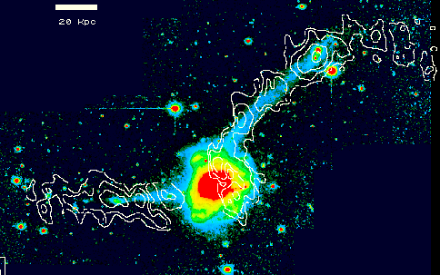
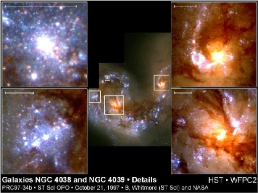
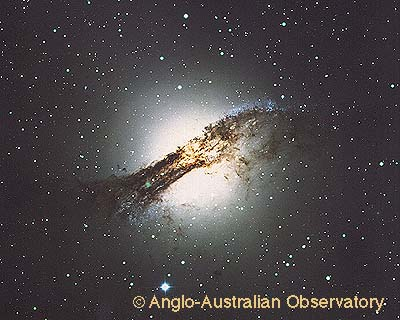
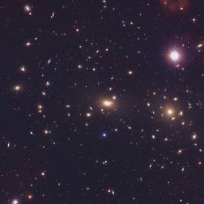

Merger Remnants and Elliptical Galaxies
Once a merger is complete, and the ULIRG phase (if any) is over, what is left behind? In 1977, Alar Toomre suggested that the remnants of disk mergers could account for the population of elliptical galaxies in the Universe. Because of violent relaxation, the merging process would effectively ``scramble'' the stellar disks, giving the remnant the surface brightness profiles and large velocity dispersions characteristic of elliptical galaxies. Toomre argued that if the merging timescale is ~ 5 x 108 years, extrapolating the number of nearby on-going mergers (~ 10) over the total age of the universe (assuming the merger rate scales like the t5/3 expected from a flat distribution of binding energy) yields a total of ~ 750 merger remnants, similar to the number of elliptical galaxies found in the nearby field. Furthermore, Toomre argued, if the remnants of these spiral mergers did not constitute the present-day elliptical galaxy population, where are they now?
This ``merger hypothesis'' for the formation of elliptical galaxies idea
also had observational support from studies of the peculiar galaxy NGC 7252
(see Figure 9) by Francois Schweizer. While this galaxy possesses two
gas-rich tidal tails (indicating a merger of two late-type spirals), it
also has the surface brightness profile expected for an elliptical galaxy.
Schweizer argued that we were catching the elliptical formation process in
the act and that NGC 7252 would evolve into a normal elliptical galaxy given
time.
|  |
| Figure 10: The merger remnant NGC 7252. The false color image shows the starlight from the remnant (red=bright, blue=faint), while the white contours show where the hydrogen gas is distributed. ( John Hibbard, NRAO) |
While the merger hypothesis could explain many of the qualitative properties of ellipticals, several detailed objections were raised. The central phase space density of spirals is lower than that of ellipticals; since violent relaxation preserves phase space density, merger remnants should have phase space densities too low to compare well to elliptical galaxies. Also, the specific frequency of globular clusters (the number of globular clusters per unit luminosity) is much larger for ellipticals than spirals. Finally, because of the high relative velocity of galaxies in clusters, mergers should be less common in these environments, yet that is where the elliptical fraction is highest. How then could mergers of disk galaxies produce the present-day elliptical galaxy population?
Recent developments have relieved some of these concerns. While it is true
that stellar phase space density is preserved during mergers, this constraint
does not apply to the interstellar gas, which can dissipate energy and flow
inwards. Subsequent star formation can raise the central phase space density
in the merger, and in principle produce an elliptical-like nucleus.
Interaction-induced star formation may also account for the differing
globular cluster specific frequencies of spirals and ellipticals. Recent Hubble
Space Telescope observations indicate that galaxy collisions can
result in the formation of a large number of young, compact star
clusters. If these clusters can survive the dynamical environment of
tidal shocks and mass loss, perhaps they are the progenitors of the
old globular clusters observed in elliptical galaxies. Finally, the
problem of the high relative velocity of galaxies in clusters can be
surmounted by realizing that structure forms hierarchically. Galaxy
clusters are the last objects to form; galaxies first assemble into
smaller groups which fall together to form a larger galaxy cluster.
The galaxy mergers which produce the current cluster ellipticals may
have occurred long ago in small groups (with low velocity dispersions),
before the cluster formed as a single virialized structure.
|  |
| Figure 11:
Hubble Space Telescope closeup of the interacting galaxy pair NGC 4038/9
(The Antennae). Note the many young, blue star clusters formed during the interaction. (STScI) |
The merger hypothesis thus remains a viable mechanism for the formation
of elliptical galaxies. We can now ask whether the merging process leaves
behind any signatures which can be used to constrain the fraction of
ellipticals which formed in this manner. The nuclear starbursts should result
in the formation of a central population of stars
which is distinct in a number of ways from the older stars in the
original galaxies. This population may manifest itself through
features ("seams") in the surface brightness profiles of ellipticals,
through strong age and metallicity gradients, and through kinematically
distinct nuclear kinematics. On larger scales, unless the starburst
completely processes the interstellar gas into stars, a small but significant
amount of cold gas may remain in the remnant. In the outer portions
of the remnant, the relaxation timescale is long and low surface
brightness tidal features -- "shells" and "loops" -- can survive for
many billions of years, indicating a strong collision in the galaxy's past.
Observationally, a significant fraction of elliptical galaxies
show kinematically distinct cores, residual gas and dust, and large scale
tidal features. Through studies such as these, it may be possible to
constrain the fraction of ellipticals formed through disk mergers.
|  |
| Figure 12:
The peculiar elliptical Centaurus A. This elliptical galaxy has a prominant dust lane, a disk of hydrogen gas, and an active nucleus. It is most likely an aged merger remnant. (Dave Malin/AAO) |
Of course, in a universe where structure forms hierarchically, all objects form from the coalescence of smaller objects. From this point of view, it may be wiser not to ask ``did mergers form ellipticals?" but rather `` what merged to form ellipticals?'' Observational studies have shown that cluster ellipticals must have formed very early, perhaps even before massive disk galaxies had formed. If so, the merging objects were probably very different from the types of galaxies we see involved in nearby mergers.
|  | Because the collapse time for structure is faster in high density environments, cluster and field ellipticals have a different formation timescale, and (under the merger hypothesis) should have different progenitors. Cluster ellipticals may form from the rapid assembly of many small progenitors, while field ellipticals may form through the more classical merger hypothesis picture of two merging spiral galaxies. These different histories should manifest themselves through differences in the structural, chemical, and stellar population mix between cluster and field samples. The observational data, however, does not show as strong an effect as that predicted by models of hierarchical structure formation. The question of whether most ellipticals were formed through major merger events remains open. | |
Figure 13: The Coma cluster, a distant cluster of galaxies containing many elliptical galaxies. |
 |